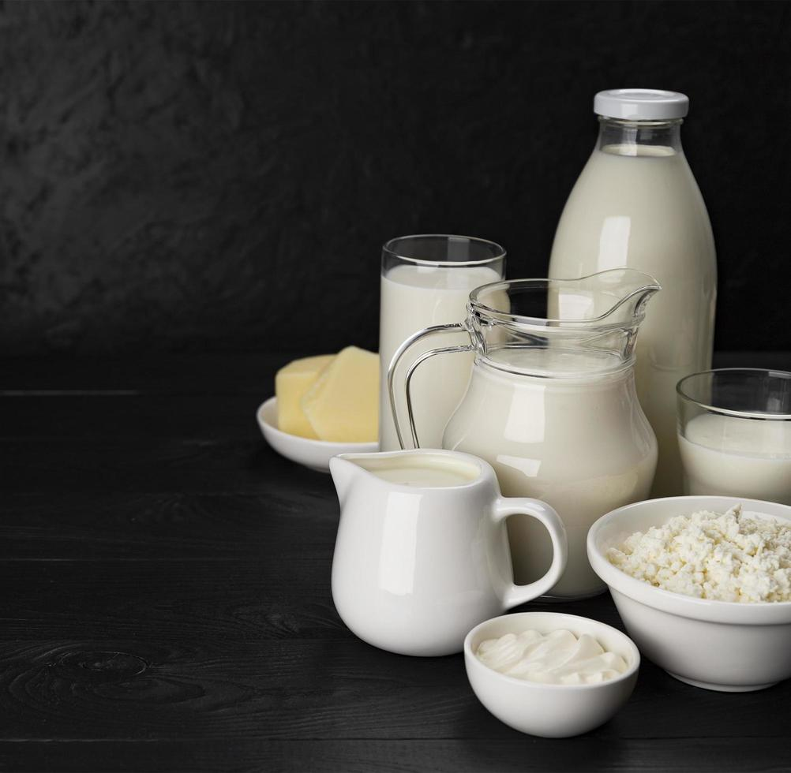
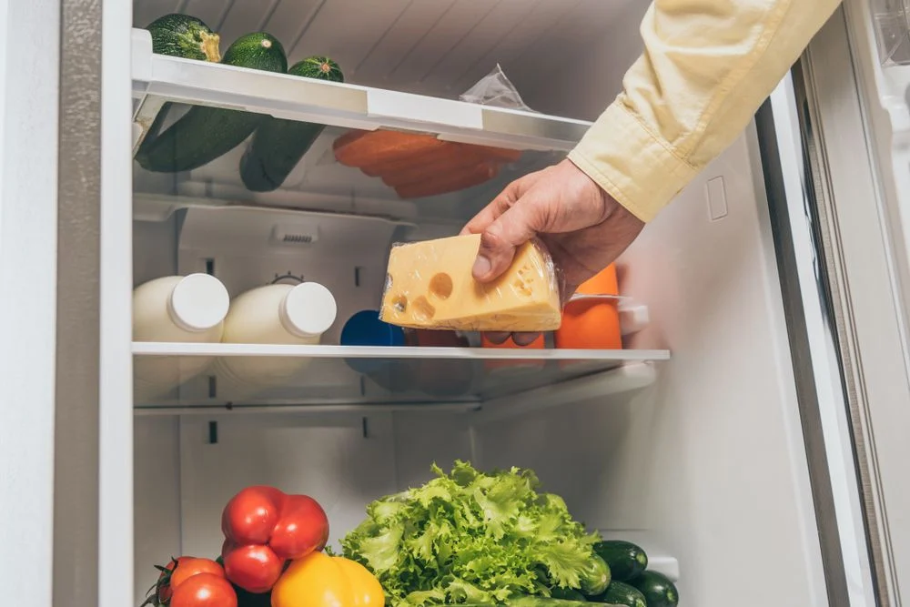

-
Benefícios do Leite
O leite fornece cálcio, que é um mineral importante para a saúde dos ossos e dentes.
De modo geral, o leite confere ao queijo uma fonte razoável de vitaminas lipossolúveis, como a vitamina A, e as hidrossolúveis, como a vitamina B.
Os benefícios do queijo e do leite o tornam aliados do bem-estar e de uma alimentação equilibrada e saudável.
-
Riscos do Queijo

Os conhecidos como “ruins” são aqueles com alto conteúdo de gordura saturada e sódio, comprometem o balanço da pressão arterial e do colesterol.
Segundo médicos, o queijo parmesão é um dos tipos que devem ser evitados por quem tem hipertensão.
Pensando na quantidade de sódio presente, seria bom evitar queijos como o parmesão, pois possui um grande teor de sódio, além dos maturados.
-
Duração e Conservação
De forma geral, qualquer queijo que esteja cortado e fora da embalagem original deve ser armazenado na geladeira. Esse alimento é bastante sensível e pode ser facilmente contaminado por fungos, mofar e mudar de sabor.
Queijos mais frescos, com bastante soro, como minas, cottage, burrata e ricota costumam durar em média 5 dias na geladeira. Os queijos mais duros ficam bem preservados de 15 dias a um mês quando estão refrigerados.
Para conservar o queijo fresco embrulhe-o num pano de prato ou saquinho plástico (papel filme também dá certo) e guarde-o na geladeira.